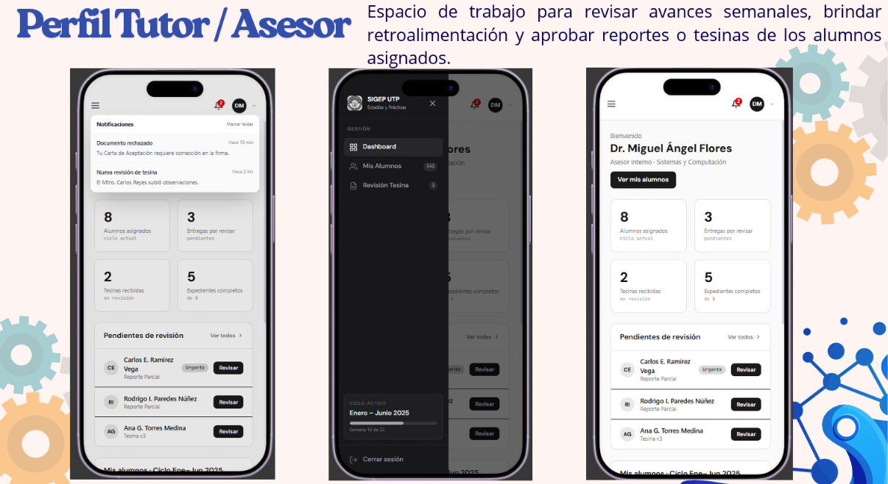

Bienvenido a mi Idea Creativa
Hola, soy Ana Belén y te doy la bienvenida a la presentación de mi proyecto innovador para el manejo de estadías y tesis universitarias.
Este sistema está diseñado para transformar la manera en que las coordinaciones académicas gestionan la asignación de asesores, eliminando el uso de hojas de cálculo manuales y reduciendo los errores humanos.
¿Qué encontrarás en este sitio?
Te invito a explorar las diferentes secciones donde explico a detalle cómo funciona mi idea, los beneficios que trae y una demostración práctica de la generación del archivo Excel.
Puedes navegar usando el menú superior, el Mapa del Sitio, o las flechitas de navegación al final de cada página.

Figura: Optimización de procesos académicos.
Sobre el Proyecto
Problemática
Actualmente, en muchas instituciones educativas, la asignación de profesores asesores para estadías y tesis se realiza mediante métodos manuales. Esto provoca pérdida de tiempo, duplicidad de datos y una gran dificultad para dar seguimiento a la relación entre alumnos y docentes.
Nuestra Solución
Mi idea innovadora consiste en un sistema web que permite llenar un formulario digital con los datos del alumno y su profesor asesor. Al finalizar, el sistema procesa la información y genera automáticamente un archivo en formato Excel con toda la relación de profesores y alumnos, listo para ser descargado y utilizado por la coordinación académica.
Beneficios Clave
- ✅ Ahorro de tiempo: Generación instantánea del documento.
- ✅ Reducción de errores: Validación de datos en el formulario.
- ✅ Centralización: Toda la información en un solo archivo Excel.
- ✅ Facilidad de uso: Interfaz intuitiva para coordinadores y alumnos.
Mapa del Sitio
Explora todas las secciones de este sitio web. Haz clic en cualquiera de las tarjetas para ir directamente a esa página.
Inicio
Bienvenida y presentación general del proyecto.
El Proyecto
Problemática, solución y beneficios de la idea.
Demostración
Video explicativo y simulador de generación de Excel.
Contacto
Información de contacto para dudas o sugerencias.
¿Cómo Funciona? (Demostración)
El flujo es muy sencillo: el coordinador o el alumno llena el formulario, y el sistema procesa la información para generar el documento Excel. Mira el siguiente video explicativo:
Simulador del Formulario
Formulario que simula mi idea, al dar clic en "Generar Excel", se descargará un archivo CSV que se abre perfectamente en Excel.
Contacto
Si deseas saber más sobre este proyecto o implementarlo en tu institución, no dudes en contactarme.
Correo: 232384742o@utp.edu.mx
Agradezco mucho tu interés en esta idea creativa. ¡Estoy segura de que puede marcar una gran diferencia en la gestión académica!